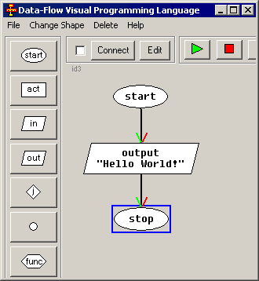

Algorithm Creation
Buttons on the left tool bar allow you to place
building blocks for your algorithms.
Let's begin with an example:
- Click "start" button and place block it into the working area.
- Click "out" button and place "output" block below previous block.
you will be asked for parameters, enter "Hello World!" in the message text box.
- Click "end" button and place it below previous block.
You have 3 commands in your algoritm, but they are not connected yet, so let's do it:
- Click first block ("start") that you've created and then second block ("output").
- Click [Connect] button to connect these blocks.
- The same way connect "output" with "end" block.
This is what you should get:

That's it! Use green arrow button to run your algorithm. The system will ask you to
save your program before running. You can change the delay time for running, if you set
it to the maximum (most right position), the value will be "P" and system will stop
after each step allowing you to use "step" button.
To edit blocks you may just double-click them, or select a block and click "Edit" button.
< < < Back To Index